Baulwürfe (3. Runde Jugendwettbewerb, 2020)
Ein Forschungsteam will das Verhalten der Maulwürfe untersuchen, die offenkundig, aber
unterirdisch ein großes Feld bevölkern und dort ihre Hügel aufwerfen. Das Team hat das Feld
gesichtet und dabei eine sogenannte Hügelkarte erstellt.
Eine Hügelkarte ist in kleine Planquadrate eingeteilt; jedes Planquadrat, auf dem sich ein
Hügel befindet, ist mit X markiert. Hier ist ein Ausschnitt dieser Karte:
X XXX
X X
X X X X
X XXX
|
Schreibe ein Programm:
Dein Programm soll prüfen, ob an einer bestimmten Stelle ein Hügel ist (X), oder nicht (ein Leerzeichen).
In der ersten und zweiten Zeile der Eingabe steht die Zeile und Spalte der zu prüfenden Stelle.
Die folgenden Zeilen enthalten die Hügelkarte.
Falls an der Stelle ein Hügel ist, gib Hügel aus, ansonsten kein Hügel.
Beim Betrachten der Karte macht das Forschungsteam eine Entdeckung: Es kann nicht sein, dass dort nur gewöhnliche Maulwürfe leben. Ein Planquadrat mit einem normalen Maulwurfshügel ist nämlich immer rundum von Quadraten ohne Hügel umgeben. Die Markierungen bilden aber auch immer wieder dieses Muster:
XXX
X X
X X
XXX
|
Im Forschungsteam herrscht große Aufregung: Es muss sich um eine neue Maulwurfsart handeln, die ihre Hügel zu solch rechteckigen Bauen formiert. Die Forscher taufen sie Baulwürfe.
Dein Programm soll den 4x3 Planquadrate großen Kartenauschnitt in der Eingabe einlesen und prüfen, ob es sich hierbei um einen Baulwurfsbau handelt.
Gib Baulwurfsbau aus, falls es sich um einen Baulwurfsbau handelt, und sonst kein Baulwurfsbau.
Schreibe ein Programm:
Dein Programm soll die Anzahl aller Baulwurfsbaue bestimmen.
Schreibe ein Programm:
Dein Programm soll die Anzahl aller Baulwurfsbaue bestimmen.
Achtung: Es gibt auch Baulwurfsbaue, die aneinander angrenzen. Sie überlappen sich allerdings nie. In dieser Karte hier gibt es beispielsweise nur 4 Baulwurfsbaue, nicht 5:
XXX
X X
X XXXX
XXXX X
XXX X X
X X XXX
X XXXX
XXXX X
X X
XXX
|
Hinweis: Es ist also notwendig, dass du dir speicherst, ob ein Eintrag einer Karte schon zu einem Baulwurfsbau gehört, oder nicht. Dafür könntest du die Karte bearbeitest (z.B. ein X zu einem x machen), oder eine neue Listen anlegen, um zu speichern, welche Baue du bereits wo gefunden hast.
Unter "weitere Hinweise" findest du mehr Erklärungen und Tipps.
Die erste und zweite Zeile der Eingabe geben an, wie breit und wie hoch die Karte ist. Danach folgt eine entsprechend große Karte mit den Hügelmarkierungen.
Hinweis: Um zu prüfen, ob an einer Stelle keine Markierung ist, muss in den Textbaustein ein Leerzeichen eingetragen werden. Es reicht nicht aus, den Textbaustein leer zu lassen.
Hinweis: Um jeden Maulwurfhügel und um jeden Baulwurfsbau sind rundherum freie Felder.
Unter "weitere Hinweise" findest du mehr Erklärungen und Tipps.
Falls du zwei Schleifen verwendest, um zu prüfen, ob es sich um einen Baulwurfsbau handelt, dann kann es vorkommen, dass das Programm mit einer Fehlermeldung Maximum call stack size exceeded. abbricht. Dieser Fehler bedeutet ganz vereinfacht ausgedrückt, dass zu viele Schleifendurchgänge erfolgen. Bitte schaue unter "weitere Hinweise" im Bereich "Maximum call stack size exceeded." nach, wie du diesen Fehler umgehen kannst.
Weitere Hinweise:
Karte einlesen
Es ist sinnvoll die Karte als Liste zu speichern. Dafür gibt es zwei Möglichkeiten.- Liste von Listen
- Speichert eine leere Liste in der Variable
Karte. - Liest eine Zeile in der Eingabe ein und speichert diese als Liste, jedes Zeichen ein Eintrag, in der Variable
eineZeile. - Fügt der Liste
Kartevon hinten die ListeeineZeilean. - Liste von Zeichenketten
Dafür müssen wir die Zeile auftrennen, sodass jede Lücke und jedes X ein Eintrag sind. Dafür kann der Baustein 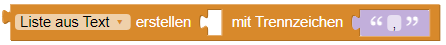 verwendet werden. Da wir allerdings keine Kommata in der Eingabe haben muss das Trennzeichen leer bleiben, dann wird jedes Zeichen als neuer Listeneintrag gewertet.
Der folgende Code
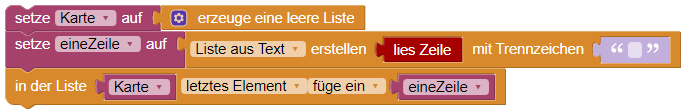
Auf ein einzelnes Element können wir zugreifen, indem wir erst auf die richtige Zeile in der Liste, und dann den richtigen Spalteneintrag in der Liste zugreifen:
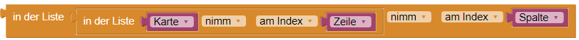
(Anmerkung: Für die -Version kann es von Vorteil sein, direkt mit Listen von Listen zu arbeiten.)
Dafür bleiben die Zeilen eine Zeichenkette (Text) und werden der Liste Karte nacheinander angehängt.
Auf ein einzelnes Element können wir zugreifen, indem wir erst auf die richtige Zeile in der Liste, und dann den richtigen Spalteneintrag im Text zugreifen:

Auf Nachbarfelder zugreifen
Um auf ein Nachbarfeld zuzugreifen können wir ganz einfach auf den Zeilen- und/oder den Spaltenindex eine 1 addieren. Wollen wir zum Beispiel auf das Feld rechts von Zeile i und Spalte j zugreifen, so können wir j + 1 rechnen. Für das Feld darunter können wir i + 1 rechnen.
Eine Schleife, die direkt über den Zahlenbereich läuft, funktioniert natürlich auch:

Gültiger Index
In dieser Version ist die Karte größer und mögliche Baulwurfsbaue können auch am Rand der Karte liegen.
Beim Zugriff auf Felder über einen Index müssen wir deshalb immer aufpassen, dass wir nicht bereits am Rand der Karte sind und sozusagen "herauslaufen" würden.
Bevor wir also auf ein Feld zugreifen, sollten wir prüfen, ob der Index dieses Feldes noch in der Karte liegt. Das ist genau dann der Fall, wenn der Zeilenindex ≤ der Höhe, der Spaltenindex ≤ der Breite der Karte sind:
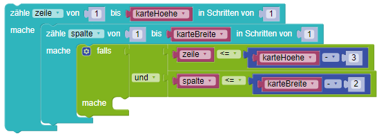
Maximum call stack size exceeded.
Wenn dieser Fehler auftritt, dann haben wir sehr wahrscheinlich gerade vier ineinander geschachtelte Schleifen: Zwei, um über die Karte zu iterieren und zwei, um zu prüfen, ob wir einen Baulwurfsbau haben.
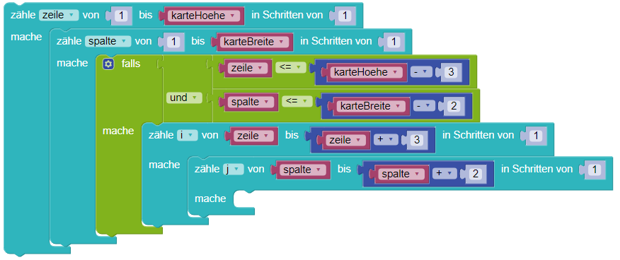
-
Keine Schleifen verwenden, um zu prüfen, ob ein Baulwurfsbau vorliegt. Anstatt dessen, können wir etwas in dieser Art zu schreiben:
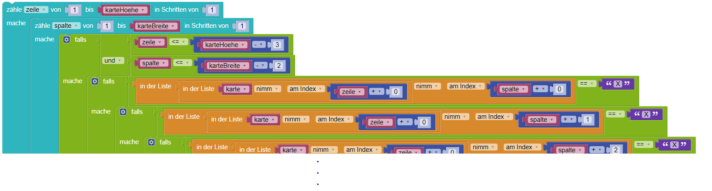 -
Die Schleifen abbrechen, wenn weitere Durchläufe nicht notwendig sind. Wenn wir schon wissen, dass dieser Kartenausschnitt definitiv kein Baulwurfsbau mehr sein kann, da z.B. bereits ein
Xan einer falschen Stelle war, können wir mit dem Baustein 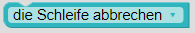 die Schleife abbrechen.
Der Baustein beendet allerdings immer nur die "innere Schleife", also die, in der wir uns gerade befinden. Wenn wir aus einer geschachtelten Schleife herausspringen wollen, dann müssen wir eine Variablen verwenden. Das kann z.B. so aussehen:

Angrenzende Bauten
Wenn du bereits gezählte Baulwürfe nicht doppelt zählen willst, gibt es zwei Optionen:
-
Einmal bietet es sich an, Einträge in der Karte zu überschreiben, zum Beispiel indem man für bereits gefundene Baulwurfsbaue die
X-Einträge mitxersetzt. Für die Karte gespeichert als Liste von Listen sähe die Veränderung für den Eintrag in Zeilei, Spaltejz.B: so aus:
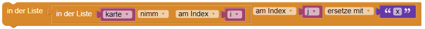
Falls du die Karte als Liste von Texten speicherst, wird es ein wenig komplizierter, da Zeichenketten sich nicht einfach so verändern lassen, wie Listen. Du musst dir den Zeileneintrag also "neu zusammensetzen". Die Veränderung für den Eintrag in Zeilei, Spaltejsähe damit z.B: so aus:
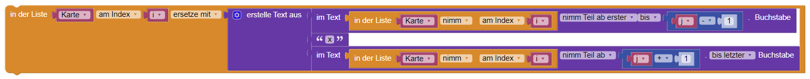 -
Alternativ kannst du dir in einer Liste den Index speichern (z.B. die obere linke Ecke), wo du schon einen Baulwurfsbau gefunden hast:
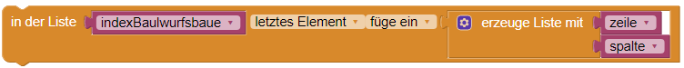
Es reicht die obere linke Ecke zu speichern, da ein weiterer Bau mindestens 4 Zeilen bzw. mindestens 3 Spalten entfernt sein muss, damit sie sich nicht überschneiden. Du kannst zum Beispiel mit einer Schleife durch deine gefundenen Indizes iterieren und prüfen, ob der Abstand ausreichend ist, um als neuer Bau gezählt zu werden: 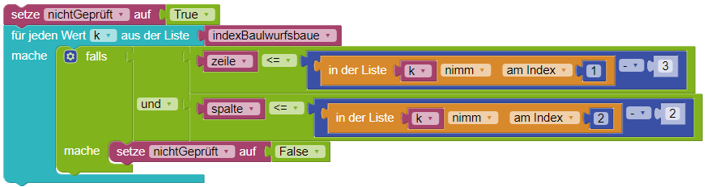
Beachte: Dein Programm muss mit allen Testfällen zurechtkommen.